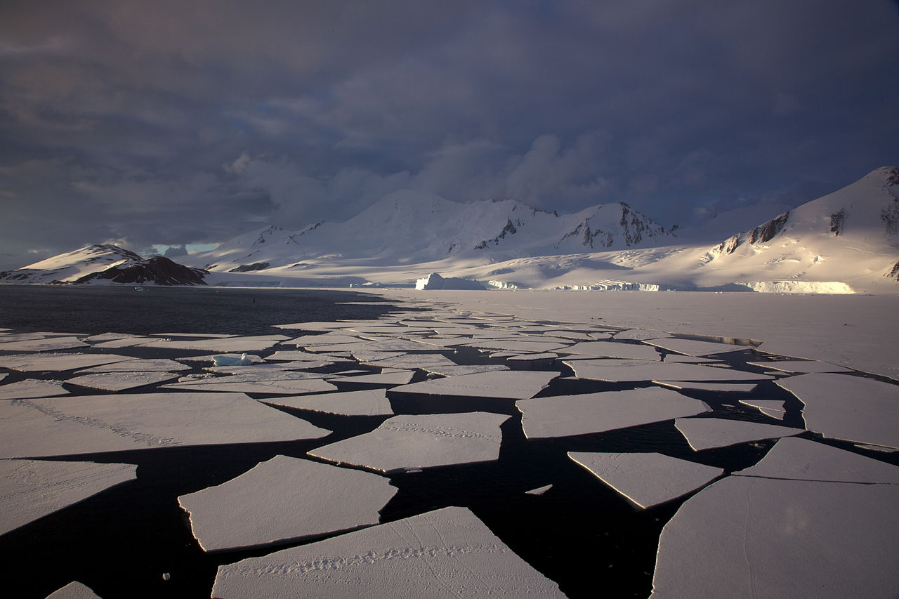

Retour
Page précédente
Page suivante
QCM : Les Formations Glaciaires et Périglaciaires - Auto-évaluation
Des empreintes profondes dans le paysage !
1. Lors de la fonte des glaçons dans un pastis, que se passe-t'il ?
A) Le niveau de liquide monte dans le verre.
B) Le niveau de liquide dans le verre ne bouge pas.
C) Cela dépend du degré d'alcool du pastis
D) Cela dépend du degré d'alcool du buveur
E) Le niveau de liquide descend dans le verre.
Commentaire:
rho1 Vi = rho1 v1 + rho2 v2 (conservation de la masse)
Vf = v1 + vd1 (volume final)
rho1 vd1 = rho2 v2 (poussée d'Archimède)
deltaV = Vf - Vi = v1 + vd1 - Vi
deltaV = v1 + vd1 - v1 - rho2/rho1 v2
deltaV = v1 - v1 = 0
2. Comment appelle-t'on ces fragments de glace flottante, souvent de forme polygonale et qui peuvent s'enchevêtrer ou s'empiler ?
×

×
A) Des joes
B) Des floes
C) Des toes
D) Des hoes
E) Des woes
Commentaire:
Les floes sont des plaques de glace flottante à la surface de l'eau, souvent polygonales, qui se forment dans les régions froides. Elles peuvent s'enchevêtrer, s'empiler, ou dériver selon les courants et les vents.
3. Qu'est-ce que le frasil ?
A) Des accumulations de blocs se formant en bas de versants enneigés surmontés par des escarpements rocheux
B) De petits cristaux de glace se formant dans des eaux turbulentes et glacées
C) Une couche de neige glacée compacte se collant sur les parois rocheuses
D) Un type de vent glacial soufflant des montagnes à l'origine de plaques de glace sur les parois
Commentaire:
Le frasil est constitué de petits cristaux de glace formés dans l'eau douce ou salée en surfusion et agités par par des mouvements turbulents. Le frasil est souvent observé dans les rivières ou les océans froids par temps clair et quand l'air est très froid (moins de 6°C). Ces cristaux peuvent s'agglomérer pour former une masse de glace plus dense. Le frasil est souvent la 1ère étape dans la formation de glace de mer.
4. Pourquoi le frasil pose problème ?
A) Il bloque la formation de glace solide à la surface.
B) Il provoque des avalanches sur les versants enneigés.
C) Il peut obstruer les prises d'eau et les systèmes hydrauliques.
D) Il augmente la salinité de l'eau en se formant.
Commentaire:
Le frasil peut s'accumuler et adhérer aux grilles des prises d'eau, réduisant le débit d'eau ou bloquant complètement l'entrée, ce qui représente un danger pour les infrastructures municipales, industrielles et nucléaires. Il constitue également une menace pour la sécurité humaine, notamment pour les navires naviguant dans les voies couvertes de glace.
5. Dans quelles circonstances se forme le frasil ?
A) Lorsque des vagues brisent une couche de glace existante.
B) Lorsque la température de l'air est supérieure à 0 °C.
C) Lorsqu'une neige compacte se transforme en glace.
D) Lorsqu'une eau agitée est en surfusion
Commentaire:
Le frasil se forme lorsque l'eau atteint une température en dessous de son point de congélation sans geler immédiatement, une condition appelée surfusion. Ce phénomène est fréquent dans les rivières et les lacs où les turbulences maintiennent l'eau en mouvement, favorisant la formation de petits cristaux de glace.
6. Qu'est-ce que la banquise ?
A) Une étendue de glace de mer flottante formée par la solidification de l'eau de mer.
B) Une accumulation de glace flottante provenant d'icebergs.
C) Une épaisse couche de neige recouvrant un glacier.
D) Des plaques de glace douce formées sur les rivières.
Commentaire:
La banquise est une étendue de glace flottante qui se forme à la surface des océans dans les régions polaires, lorsque l'eau de mer gèle. Contrairement aux glaciers, elle se compose de glace salée et non d'eau douce solidifiée.
7. Est-ce que la banquise peut être salée ?
A) Non, car le sel est expulsé lors de la formation de la glace.
B) Oui, car la glace se forme directement à partir de l'eau de mer salée.
C) Oui, car la glace peut piéger des gouttelettes d'eau salée, constituant des poches de saumures emprisonnées dans la glace
D) Non, car elle est constituée de neige compactée.
Commentaire:
La banquise n'est pas salée, car le sel contenu dans l'eau de mer est expulsé pendant la formation de la glace. Cependant, elle peut contenir des poches de saumure résiduelle, particulièrement au début de sa formation.
8. Quelle est l'augmentation annuelle actuelle du niveau de la mer ?
A) Environ 3 à 4 millimètres par an.
B) Environ 0,1 millimètre par an.
C) Environ 10 centimètres par an.
D) Environ 1 mètre par an.
Commentaire:
Le niveau de la mer augmente actuellement d'environ 3 à 4 millimètres par an, principalement en raison de la fonte des glaciers et des calottes polaires, ainsi que de l'expansion thermique de l'eau liée au réchauffement climatique.
9. Quelle est la part de la fonte de la banquise dans l'augmentation actuelle du niveau de la mer ?
A) Environ 25 %
B) Environ 50 %
C) Aucune
D) Environ 10 %
Commentaire:
La fonte de la banquise ne contribue pas à l'augmentation du niveau de la mer, car elle flotte déjà sur l'eau, et son volume déplacé est équivalent à celui qu'elle libère en fondant, selon le principe d'Archimède. En revanche, la fonte des glaciers et des calottes polaires, qui se trouvent sur la terre ferme, a un impact direct sur l'élévation du niveau de la mer.
10. Quelle est la part de la fonte des glaciers continentaux (hors calottes polaires) dans l'augmentation actuelle du niveau de la mer ?
A) Environ 75 %.
B) Environ 30 %.
C) Environ 50 %.
D) Environ 5 %.
Commentaire:
La fonte des glaciers continentaux contribue à environ 30 % de l'augmentation actuelle du niveau de la mer. Cette contribution provient principalement des glaciers de montagne situés en dehors des calottes polaires, comme ceux de l’Himalaya, des Andes, ou des Rocheuses. Les autres contributions majeures proviennent de la fonte des calottes polaires et de l'expansion thermique des océans due au réchauffement climatique.
11. Quelle est la part de la fonte des inlandsis dans l'augmentation actuelle du niveau de la mer ?
A) Environ 70 %.
B) Environ 30 %.
C) Environ 10 %.
D) Environ 50 %.
Commentaire:
La fonte des inlandsis, notamment ceux du Groenland et de l'Antarctique, contribue à environ 30 % de l'augmentation actuelle du niveau de la mer. L'inlandsis du Groenland fond rapidement en raison du réchauffement global, tandis que l'inlandsis de l'Antarctique perd de la masse principalement par la désintégration des plateformes de glace et l'accélération des glaciers côtiers.
12. Quelle est la part du réchauffement des eaux océaniques dans l'augmentation actuelle du niveau de la mer ?
A) Environ 70 %.
B) Environ 10 %.
C) Environ 30 %.
D) Environ 20 %.
Commentaire:
Le réchauffement des eaux océaniques contribue à environ 30 % de l'augmentation actuelle du niveau de la mer. Ce phénomène, connu sous le nom d'expansion thermique, se produit parce que l'eau se dilate lorsqu'elle se réchauffe, augmentant ainsi le volume des océans même sans ajout d'eau provenant des glaciers ou des inlandsis.
13. La carte suivante montre la migration de la ligne d'échouage (
grounding line
en anglais) d'une partie de la calotte glaciaire de l'Antarctique. Mais qu'est-ce que la ligne d'échouage ?
×
A) La zone où la glace terrestre commence à se transformer en eau.
B) La frontière entre la glace et la mer libre de glace.
C) La région où la glace atteint son épaisseur maximale.
D) La limite où la glace posée sur le fond marin commence à flotter.
Commentaire:
La ligne d'échouage est la limite où la calotte glaciaire, auparavant soutenue par le fond marin rocheux, commence à flotter sur l'eau. Elle joue un rôle crucial dans la stabilité des calottes, car sa migration en amont peut déstabiliser la calotte glaciaire, entraîner une augmentation du flux de glace vers l'océan et donc contribuer à l'élévation du niveau de la mer.
14. Qu'est-ce qu'un inlandsis ?
A) Un petit glacier situé en altitude dans les montagnes.
B) Un type de banquise qui flotte sur l'océan.
C) Une immense calotte glaciaire couvrant une grande partie d'un continent.
D) Une zone où la neige s'accumule régulièrement mais ne se transforme pas en glace.
Commentaire:
Un inlandsis est une vaste calotte glaciaire qui couvre une grande partie d'un continent ou d'une île, comme les calottes glaciaires du Groenland et de l'Antarctique. Contrairement aux glaciers de montagne ou aux calottes glaciaires plus petites, les inlandsis sont d'énormes masses de glace continentale.
15. Parmi ces termes, lesquels sont des synonymes d'inlandsis ?
A) Champ de neige permanent.
B) Glaciers passifs
C) Glacier de vallée.
D) Glaciers actifs
E) Banquise flottante.
F) Glaciers de haute altitude
G) Calotte glaciaire continentale.
H) Glaciers de haute latitude
Commentaire:
Un inlandsis, également appelé calotte glaciaire continentale, désigne une immense masse de glace qui recouvre une large partie d’un continent. Ce terme ne s’applique pas aux glaciers plus petits, aux champs de neige ou à la banquise, qui est de la glace flottante formée à la surface de l’eau. On peut les considérer aussi comme des glaciers passifs, étant donné que les flux entrants et sortants de glace sont négligeables par rapport à leur masse.
16. Quelle est l'épaisseur moyenne de glace des inlandsis terrestres ?
A) Environ 2 000 mètres.
B) Environ 5 000 mètres.
C) Environ 500 mètres.
D) Environ 200 mètres.
Commentaire:
Les inlandsis terrestres, comme ceux du Groenland et de l'Antarctique, ont une épaisseur moyenne d'environ 2 000 mètres, avec des zones atteignant plus de 3 000 mètres. Cette immense masse de glace joue un rôle crucial dans le système climatique et dans l'élévation du niveau de la mer lorsqu'elle fond.
17. À quelle température congèle l'eau de mer en moyenne ?
A) Environ -4,5 °C.
B) Environ -10 °C.
C) Environ -1,8 °C.
D) À 0 °C
Commentaire:
L'eau de mer gèle en moyenne à -1,8 °C, en raison de la présence de sel qui abaisse son point de congélation par rapport à l'eau douce. Ce phénomène dépend de la salinité : plus l'eau est salée, plus la température de congélation est basse.
18. Quelle est la densité de la glace naturelle en moyenne ?
A) Environ 0.97
B) Environ 0.91
C) Environ 0.8
D) Environ 1.04
Commentaire:
La glace naturelle a une densité moyenne d’environ 0.91. Cette densité est inférieure à celle de l’eau liquide (densité de 1), ce qui explique pourquoi la glace flotte. La densité peut varier légèrement en fonction des inclusions d'air ou d'impuretés.
19. Quelle est la structure cristalline de la glace naturelle en moyenne ?
A) Glace Ic
B) Glace III
C) Glace II
D) Glace X
E) Glace Ih
F) Glace IX
G) Glace XII
Commentaire:
La glace naturelle possède une structure cristalline hexagonale, appelée glace Ih. Cette structure est la plus courante sur Terre et résulte de l'agencement des molécules d'eau en un réseau ordonné grâce aux liaisons hydrogène. D'autres formes de glace avec des structures cristallines différentes existent, mais elles se forment sous des conditions de température et de pression spécifiques.
20. Quand un glacier débouche sur la mer, des pans de glace peuvent se fissurer, se détacher et s'écrouler en donnant des blocs dérivant à la surface de l'eau. Quel est le terme précis pour désigner ce phénomène ?
×
×
Votre navigateur ne supporte pas la lecture de cette vidéo.
A) Le vêlage
B) L'ablation glacio-littorale
C) L'étalement
D) L'érosion glaciaire
Commentaire:
Le vêlage est le terme précis pour désigner le détachement de blocs de glace d'un glacier ou d'une plateforme glaciaire lorsqu'ils atteignent la mer. Ces blocs deviennent des icebergs, qui dérivent ensuite à la surface de l'eau. Ce phénomène est courant dans les régions polaires.
Corriger
Recommencer